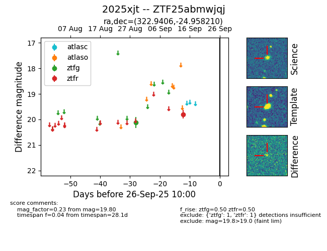

FINK: ZTF25abmwjqj
Lasair: ZTF25abmwjqj
ALeRCE: ZTF25abmwjqj
TNS: 2025xjt
YSE: 2025xjt
ZTF25abmwjqj (ztf,fink)
2025xjt (tns,yse)
equatorial (ra, dec) = (322.9406,-24.95821)
galactic (l, b) = (23.9730,-45.39222)

last ztfg=20.11, ztfr=19.80
1 ztfg, 1 ztfr detections